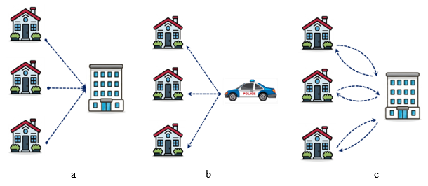
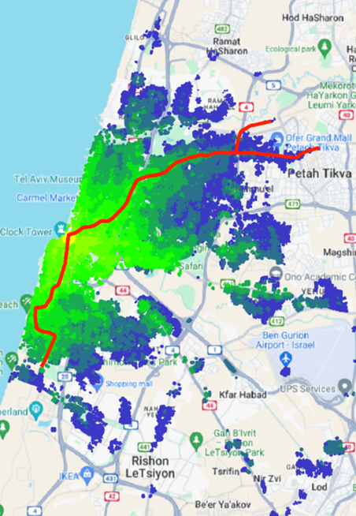
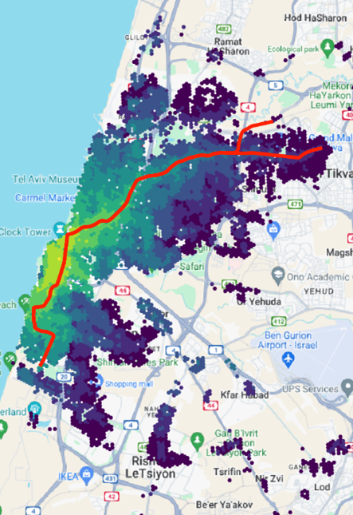
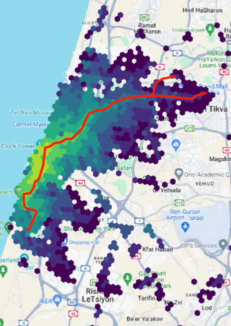

1. Introduction
1.1. What is it all about?
The goal of the Accessibility Calculator (AC) plugin is to evaluate transport accessibility at the resolution of a single building. This assessment relies on a precise estimate of travel time between the Origin (O) and Destination (D) buildings of a trip. The OD travel time depends on the transportation mode, which in the current version of the AC can be either Public Transport (PT) or Private Car. Accessibility computation results are stored in a CSV table detailing the trips between buildings and are visually represented as accessibility maps.
1.2. Accessibility Calculator accounts for every component of a trip
A PT or car trip comprises several components. A PT user walks from the O-building to the initial stop, waits for a vehicle (bus, tram, metro, etc.), rides to a transfer stop, waits for the next vehicle, and—potentially after additional transfers—alights at the final stop to walk to the D-building.
A car traveler walks from the O-building to their parked car, drives to the destination, locates nearby parking, and then walks to the D-building.
1.3. The Algorithms employed in Accessibility Calculator
To estimate transit accessibility, we use the RAPTOR algorithm.
To estimate private car accessibility, we use the Dijkstra algorithm.
Both algorithms are modified to handle real-world transit and road network data, enabling the accessibility assessment of city buildings rather than just network nodes or PT stops.
1.4. The data necessary for accessibility computations
Using the Accessibility Calculator requires three datasets, each covering your region of interest:
A layer of road links, with two mandatory attributes: traffic direction and maximum traffic speed.
A layer of buildings, represented by foundation polygons.
A GTFS dataset detailing transit lines and schedules.
Roads and Buildings: If using OSM layers, we highly recommend downloading them from https://download.geofabrik.de/. We assume the user’s OSM layers follow this site’s formatting, including the mandatory OSM road link attributes: FCLASS, ONEWAY, and MAXSPEED. For non-OSM sources, the Accessibility Calculator verifies that attributes representing traffic direction and maximum free speed are present and contain valid data.
GTFS: GTFS databases are available from various sources, such as https://mobilitydatabase.org/.
Data quality and consistency: Road and building foundation layers downloaded from OSM often contain notable topological errors and must be “topologically cleaned” prior to computation. Layers from alternative sources must also be tested and cleaned if necessary, and their attribute completeness must be verified. This process occurs during database construction (see Section 4 and Section 5), where road, building, and GTFS datasets are converted into fast-access databases. The system builds two distinct databases: one for computing transit accessibility and another for car accessibility. Additionally, the Accessibility Calculator generates several layers of hexagons for fast assessment of accessibility and visualization at lower resolution.
Note
It is often practical to use datasets that cover an area larger than your immediate region of interest.
In this tutorial, we utilize OSM layers for Israeli roads and buildings: the gis_osm_buildings_a_free building foundation polygons layers and the gis_osm_roads_free road links layer. We source Israeli GTFS datasets from https://gtfs.pro/. In the examples of accessibility computations for the Tel Aviv Metropolitan Area (Section 10 of this tutorial), we employ country-wide GTFS data from June 2018 and June 2024. A zip file containing all datasets and layers used in these examples (Section 10.7) will help you to follow all steps necessary for full deployment of the AC plugin.
Note
If the building dataset is visibly incomplete or totally missing, we recommend using the QGIS Create Grid tool to generate a regular hexagonal grid across the study area with the hexagon spacing that matches the typical inter-building spacing in the study area (e.g., 30–50 m). To delineate the built-up environment, filter the generated hexagons by selecting those associated with constructed areas, such as cells that intersect populated statistical zones while maintaining a minimum setback from road network centerlines.
1.6. Data Preprocessing
To resolve data inconsistencies and accelerate data access during computations, the road and building layers must be checked for consistency and topologically cleaned. These raw layers typically cover areas much larger than the specific region of analysis. We recommend working with the large areas yet not exceeding the limits of ~1 million buildings.
1.7. Prepare Databases
Typically, you will construct multiple databases to represent various scenarios for road infrastructure or transit network development (such as adding or canceling lines), assess the accessibility for each scenario, and then compare the results.
1.8. TO-, FROM-, and ROUNDTRIP-accessibility
TO-accessibility relies on the travel time to a specific destination building, usually a facility building, that must be reached at a certain time, from all other locations in the city (Figure 2a). A common application is assessing the travel time to downtown offices, shops, and attractions from the rest of the city if one aims to arrive there towards the workday start or opening hour.
FROM-accessibility is based on the travel time from a specific origin building, usually a service location, to all other locations in the city (Figure 2b). A typical application is evaluating the travel time from the emergency vehicles’ station to each building in the area, starting at a certain moment.
ROUNDTRIP-accessibility relies on the combined travel time from the traveler’s origin to a specific destination building, usually a facility building, that must be reached at a certain time, and travel time back, starting at a certain time (Figure 2c). A typical application assesses the total commuting time from home to work, to be there at the beginning of the workday and back again, starting at the workday’s end hour. Roundtrip travel time heavily influences travelers’ mode choices and is a critical metric for transportation planning.

Figure 2. Schematic view of (a) TO-accessibility; (b) FROM-accessibility, and (c) ROUNDTRIP-accessibility
1.9. Service Area versus Cumulative Number of Opportunities
Accessibility of a specific set of facilities is represented by the Service Area (SA) of those facilities.
Service Area can be calculated for the TO, FROM, and ROUNDTRIP accessibility:
The “TO” service area includes all buildings from which at least one destination in the set of, typically, facilities, can be reached within a maximum travel time. If several facilities are accessible, the map highlights travel time to the facility to which the trip arrives closest to the established arrival time or to which the trip is the fastest.
The “FROM” service area for a set of origins, typically set of facilities, includes all buildings reachable within a maximum travel time from at least one facility in the set. If a building can be reached from multiple facilities, the algorithm highlights the facility offering the trip that arrives earliest or is the fastest.
The “ROUNDTRIP” service area includes all buildings from which at least one destination in the set of, typically, facilities can be visited in a round trip, provided the combined travel time (there and back) does not exceed the maximum allowed duration. If multiple facilities fit this criterion, the one with the fastest round trip is shown. The roundtrip service area provides a new view of accessibility and our recent preprint (https://papers.ssrn.com/sol3/papers.cfm?abstract_id=6181258) offers a more formal introduction to this measure, alongside examples using the dataset provided in this tutorial.
The details for each leg of the trip to the reachable building are stored as attributes of this building.
The default SA thematic map visualizes the accessible buildings and the fastest roundtrip travel time or travel time from or to them, depending on the chosen option. Importantly, when analyzing multiple facilities, the specific travel times between each origin and each destination (and not only for the closest one) are also calculated and stored. The AC plugin does not map these facility-specific outputs; however, the user can map them manually or use them to compute advanced accessibility metrics (e.g., mapping buildings where residents can reach over 50% or 90% of downtown facilities).
When analyzing multiple facilities, their service areas overlap, requiring an aggregated, yet high-resolution measure known as the Cumulative Number of Opportunities (CNO). An “opportunity” in this name represents a specific characteristic of a building. It could be the total number of white-collar or blue-collar jobs in it or simply the number of residents of apartments. For a given location and chosen opportunity attribute, the result of the CNO computations represents the total number of opportunities accessible within predefined time intervals (e.g., 10, 20, or 30 minutes) by PT or car, condensing the spatial dimensions of accessibility for this location into just a few numbers.
Output of the CNO calculations: The default CNO measure is the total number of accessible buildings. Other metrics, such as the total population or number of jobs in accessible buildings, can be calculated if building-level data on this opportunity is available. Just as the SA maps, the CNO maps are calculated for TO, FROM, and ROUNDTRIP accessibility. If multiple opportunity attributes are selected, maps for each are computed simultaneously. The cumulative number of opportunities is stored as a building attribute, categorized by user-defined time bins, e.g., the total number of buildings accessible within 5, 10, or 15 minutes trips from a building.
1.10. Adjustment of the trip’s start or arrival time to the transit timetable
Modern transit users typically know when a bus or train will arrive at their starting or final stop and plan their trips accordingly. To evaluate accessibility for these informed users, we modified the RAPTOR algorithm to account for schedule-based trip departures and arrivals. Schedule-defined accessibility can be applied to any TO/FROM/ROUNDTRIP or SA/CNO calculation. For more details on schedule-based accessibility, see Section 6.1.2.
1.11. Car speed for accessibility computation
Computing car accessibility requires knowing the traffic direction of the links and traffic speed. When using an OSM database as the road layer source, traffic direction is stored in the ONEWAY attribute, while the maximum (free-flow) traffic speed in the MAXSPEED attribute, and the MAXSPEED values are determined by the road link type (an obligatory for the OSM FCLASS attribute)—such as highway, major city street, or secondary neighborhood street. Often, only FCLASS attribute value is known for the OSM link, while the link’s ONEWAY or MAXSPEED attribute values are empty or NULL. In this case, ONEWAY attribute is assumed to be “B,” meaning “2-way traffic,” while the MAXSPEED is defined by the FCLASS of the link: The free-flow traffic speeds VFCLASS organized by FCLASS are provided in the car_speed_by_link_type.csv table (Figure 3a).
The actual traffic speed at a specific hour of a day is determined, for the OSM layer, by multiplying the maximum traffic speed by the Congestion Delay Index CDI(t) - the ratio of the average speed at an hour t to the free-flow speed. The set of 24 hourly CDI values is stored in the cdi_index.csv table (Figure 3b) and is based on Figure 7 from Wei et al. (2022), https://doi.org/10.1016/j.eiar.2022.106808.
The speed VFCLASS(t) on a link of type FCLASS at hour t is calculated as:
VFCLASS(t) = VFCLASS*CDI(t).
Both the car_speed_by_link_type.csv and cdi_index.csv tables are supplied with the Accessibility Calculator, stored within the system folder, and can be fully edited by the user.
| link type | speed (km/h) |
|---|---|
| busway | 18 |
| cycleway | 15 |
| footway | 3 |
| motorway_link | 40 |
| ... | ... |
| hour | CDI |
|---|---|
| 0 | 1.0 |
| ... | ... |
| 5 | 0.9 |
| 6 | 0.65 |
| ... | ... |
Figure 3. Free flow speeds by the FCLASS link types (a) and the CDI(t) index, by hours of the day (b)
If the source of the road layer is not OSM that is, does not have an FCLASS attribute, it must contain attributes for traffic direction and maximum free-flow speed. The user should select these attributes from the list of candidate attributes. The Congestion Delay Index will be applied to the attribute representing maximum free-flow speed.
Note
You can customize Car Speed and CDI parameters by editing two reference tables:
car_speed_by_link_type.csv and cdi_index.csv. These modifications can be applied
either globally (permanently) for all future database builds, or locally for specific
project calculations.
To change default values across all future car routing database builds, update the master configuration files located in your QGIS user profile. Make your file explorer show hidden items and navigate to your QGIS configuration folder depending on your installed version:
C:\Users\<YourUsername>\AppData\Roaming\QGIS\QGIS3\profiles\default\python\plugins\tau_net_calc\config\
C:\Users\<YourUsername>\AppData\Roaming\QGIS\QGIS4\profiles\default\python\plugins\tau_net_calc\config\
Edit and save the target CSV files. All subsequent network builds will use these values as defaults.
For project-specific changes with the existing car routing database, find these files in
the folder where your currently used car database is stored. When a car routing database
is constructed, the plugin copies both system tables directly into this folder and uses
them for computations. The process of database construction is described in Section 5.4
of this tutorial. If you use the plugin’s defaults, this folder’s name is the project name
concatenated with _car_json.
Locate and edit these local copies of car_speed_by_link_type.csv and cdi_index.csv.
Modifications in local project folders are applied directly during runtime without a
pre-computation confirmation or validation step. Ensure data formatting and value ranges
are correct before launching computations.
1.12. Comparison of accessibility maps obtained in different scenarios
Typically, accessibility is computed for various urban transportation development scenarios, and the resulting outputs are then compared, usually pairwise.
Let the scenarios be #1 and #2, with their respective building-level accessibility measures, already computed. The Accessibility Calculator provides three metrics for pairwise comparing scenario outputs (index i denotes buildings):
- Relative accessibility:
The ratio of the scenario outputs per building, calculated as R1,2,i= S1,i/S2,i.
- Absolute accessibility difference:
The direct difference between scenario outputs per building, calculated as D1,2,i= S1,i– S2,i.
- Relative accessibility difference:
The relative difference between scenario outputs per building, calculated as RD1,2,i= (S1,i– S2,i)/S2,i.
Note that scenarios #1 and #2 must be comparable: For example, the destination facilities for TO-accessibility computations must be identical. The Accessibility Calculator verifies this comparability before either executing the comparison or reporting an incomparability error.
1.13. Visualization of accessibility computations and lower-resolution computations
The Accessibility Calculator always presents its results as thematic maps (Figure 4). These maps utilize one of the visualization layers generated during the data preparation stage (see Section 4):
A layer of Voronoi polygons generated from the building centroids, or
Layers of hexagons https://docs.qgis.org/3.40/en/docs/user_manual/processing_algs/qgis/vectorcreation.html#qgiscreategrid at multiple resolution levels, each fully covering the underlying building layer. These layers can be also used for lower-resolution assessment of accessibility. The attributes of the hexagon layers are computed based on the buildings’ attributes, and if the latter are changed, the layers of hexagons must be rebuilt.
The layer for presentation is defined by the user’s choice of accessibility computations resolution. If computations are performed at the highest possible resolution of buildings, the Voronoi polygons are used; if computations are based on hexagons of selected size, the results are presented based on the layer of these hexagons too. Visualization options are discussed in detail in Section 9.



Figure 4: The 45-minute transit FROM-accessibility service maps, originating from the Gesher Theater located in the northern center of the Yaffo area, Tel Aviv. (a) The scenario is analyzed at a resolution of buildings and presented using Voronoi polygons, (b) Analysis and presentation are performed based on the 100 m-side hexagons, (c) Analysis and presentation are performed based on the 200 m-side hexagons.
1.14. Format of input data and outputs of the computations
The Accessibility Calculator computations rely on three high-resolution datasets: the GIS layers of roads and buildings, and the GTFS dataset of the transit network. The GIS layers can be supplied in any QGIS-compatible format. However, the format of the GTFS data is strictly defined by its standard specifications and cannot be altered.
Starting from version 7 of the AC plugin, the internal databases are stored in JSON format, while all computational outputs are natively stored in the GeoPackage (.gpkg) formats, which is built on the top of .sqlite format, see https://docs.qgis.org/3.44/en/docs/user_manual/managing_data_source/supported_data.html for more details. The output of every computation comprises at least two tables: a Log table that details the specific parameters and settings of the scenario, and the primary results of the computations. All these tables are neatly consolidated within a single .gpkg database file. For user’s convenience, computations log is additionally stored as a separate CSV file, which name is a concatenation of the name of the .gpkg file and “_log.” The CA-plugin exploits the log version stored in the .gpkg database file and does not use the CSV version of the log.
Once a computation is successfully performed, the GeoPackage database table representing primary results of computations is automatically loaded into your current QGIS project and rendered as a thematic map. To deal with the rest of the output tables, a user should load them to the QGIS project again. From there, they can be directly analyzed using standard QGIS tools or exported as separate CSV tables for use with external analytical software.